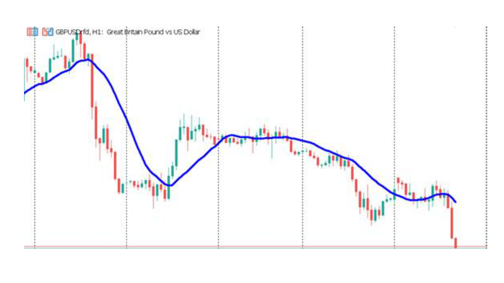
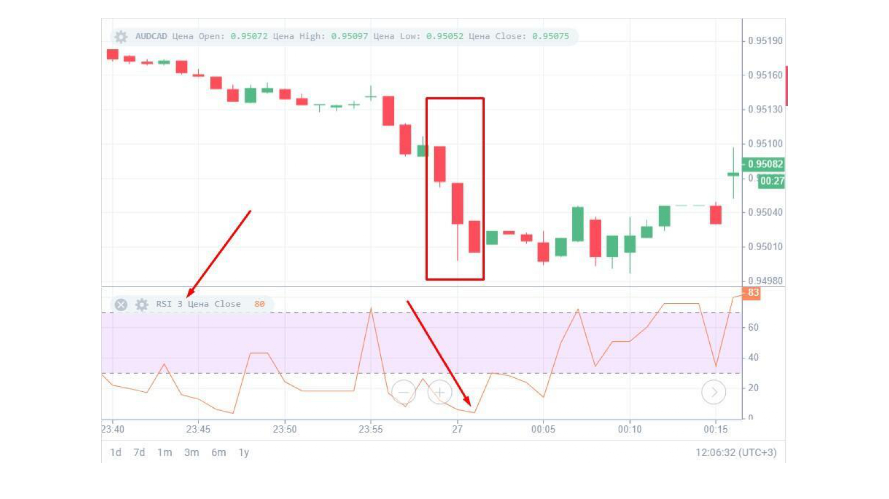
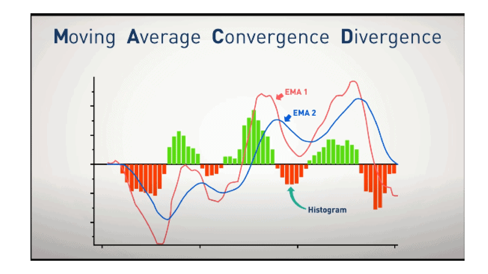
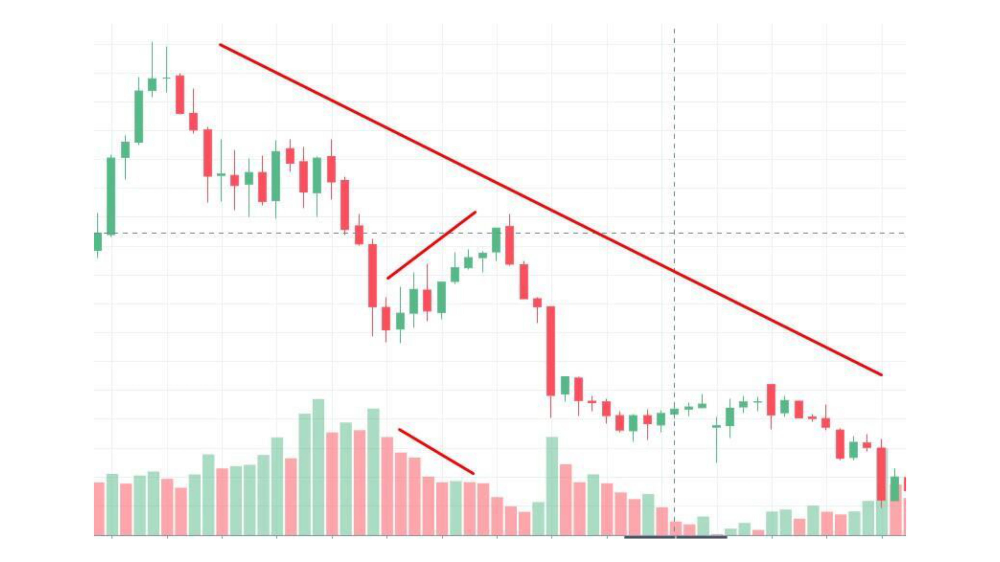

Зачем нужны индикаторы
Индикаторы — это математические расчёты на основе цены и объёма. Они помогают подтвердить сигнал, увидеть скрытые закономерности и убрать часть эмоций. Но важно понимать: индикаторы не предсказывают будущее. Они лишь показывают, что происходило с ценой.
1. Скользящие средние (MA)
Moving Average — средняя цена за определённый период. Бывает простая (SMA) и экспоненциальная (EMA). Популярные периоды: 20, 50, 100, 200.
Как использовать:
- Цена выше MA — тренд восходящий.
- Цена ниже MA — тренд нисходящий.
- Пересечение быстрой и медленной MA — сигнал на вход.
- MA часто работает как динамическая поддержка/сопротивление.

2. RSI (Индекс относительной силы)
RSI колеблется от 0 до 100. Показывает силу движения:
- RSI выше 70 — перекупленность. Возможен откат вниз.
- RSI ниже 30 — перепроданность. Возможен отскок вверх.
- RSI между 30 и 70 — норма.

3. MACD
MACD — это две скользящие средние, разница между ними и сигнальная линия. Помогает увидеть смену импульса.
- Пересечение MACD и сигнальной линии — сигнал.
- Гистограмма растёт — импульс вверх.
- Гистограмма падает — импульс вниз.
- Дивергенция MACD и цены — сильный сигнал разворота.

4. Объёмы
Объём — количество сделок за период. Объёмы подтверждают силу движения:
- Рост цены с ростом объёма — сильный тренд.
- Рост цены с падением объёма — слабый тренд, возможен разворот.
- Большой объём на пробое уровня — подтверждает пробой.

Сколько индикаторов использовать
Классическая ошибка новичков — навесить 10 индикаторов. Это создаёт «аналитический паралич». Оптимально — 2–3 индикатора, которые дополняют друг друга:
- MA — для тренда.
- RSI — для перекупленности/перепроданности.
- Объёмы — для подтверждения.
Что важно уяснить из урока
- Индикаторы — дополнение, а не замена анализа графика.
- MA — тренд. RSI — перекупленность. MACD — импульс. Объёмы — сила.
- Не более 2–3 индикаторов одновременно.
- Цена важнее любого индикатора.